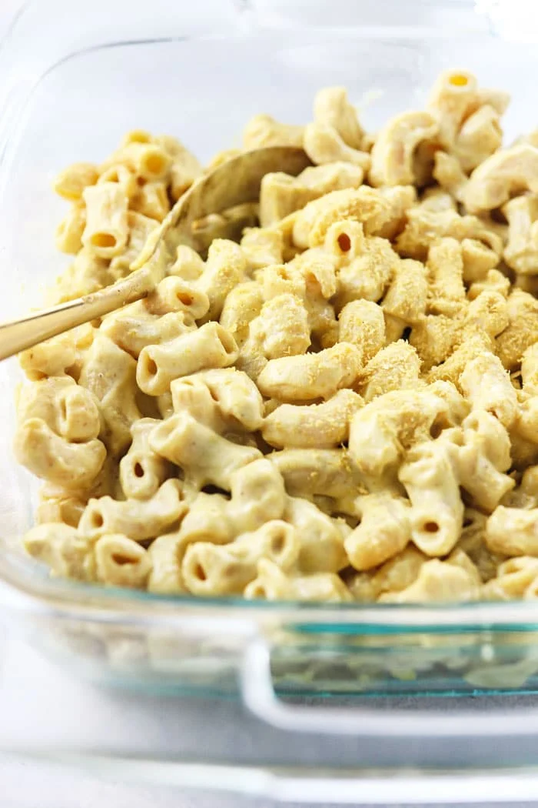

Vegan Macaroni and Cheese

by DetoxInista
This is the BEST Vegan Mac and Cheese recipe I’ve ever tasted. Tender macaroni pasta is tossed in a creamy cashew “cheese” sauce, creating a remarkably similar taste and texture to the original. Everyone who tries this vegan Mac n’ Cheese loves it– even if they’re NOT vegan!
INGREDIENTS:
- 1 1/2 cups raw cashews (soaked in water for 2 hours, if desired)
- 3 tablespoons fresh lemon juice
- 3/4 cup of water
- 1 1/2 teaspoons fine salt
- 1/4 cup nutritional yeast
- 1/2 teasponns chili powder
- 1/2 clove garlic
- 1/4 teaspoon turmeric
- pinch of cayenne pepper (optional)
- 1/2 teaspoon mustard (optional;spicy brown or yellow
- 16 oz elbow or shell pasta of choice (gluten free, if needed)
- freshly ground black pepper
- paprika (for garnish)
STEPS
- Prepare the pasta according to package directions. Drain the cashews if you soaked them. (This makes them easier to blend)
- While the pasta is cooking, combine the cashews, lemon juice, water, salt, nutritional yeast, chili powder, garlic, turmeric, cayenne (if using), and mustard in a high speed blender and blend until silky smooth. If the mixture is too thick, add 2-4 more tablespoons of water and blend again.
- Once the pasta is tender, drain and rinse it, then return the pasta to the pot and stir in the cheese sauce. Season to taste and serve warm!